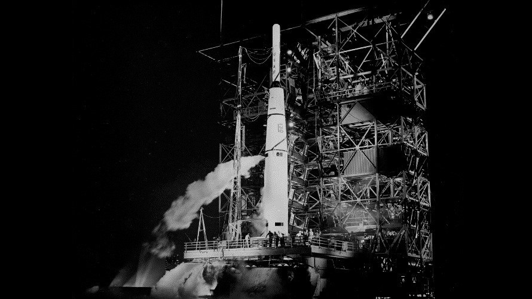
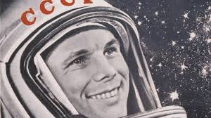
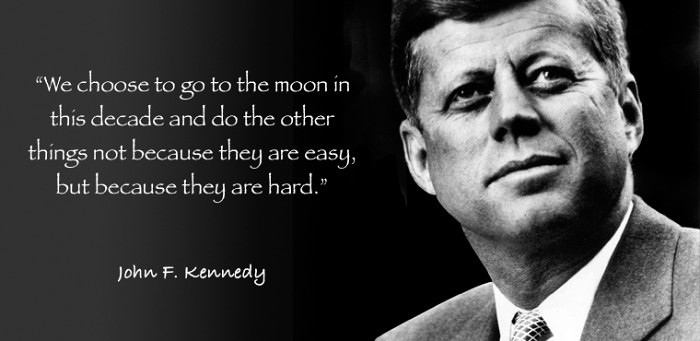

MOON LANDING
By Asuka Li
A tribute to the inexhaustible spirit of exploration of mankind
_______________
In 1957, the Soviet Union launched the Sputnik 1 into an elliptical low Earth orbit on 4 October 1957, marking the beginning of the space age.
In 1958, the American Pioneer 0-3 and the Soviet Union's Luna 1A-C, all failed to launch, severely hitting the confidence of people in the space industry. Many doubts were raised: is it possible for human to land on the moon?
Failed Journey
After the New Year's Day in 1959, on January 4th, the Soviet Union's Luna 1 flew over the moon at a distance of about 6,000 meters.
Eight months later, Luna 2 crashed into the moon's surface and crashed.

The First Manned Flight
April 12, 1961, the Soviet Union achieved the world's first manned space flight.
We Choose To Go To The Moon
On September 12, 1962, President Kennedy gave a speech: We choose to go to the moon. The Apollo program begins.
Moon Landing
July 20, 1969 Apollo 11 landed successfully. This is an epoch-making moment in history: human beings first realized manned landing on the moon.
At that time, 600 million people around the world watched this historic scene through television.